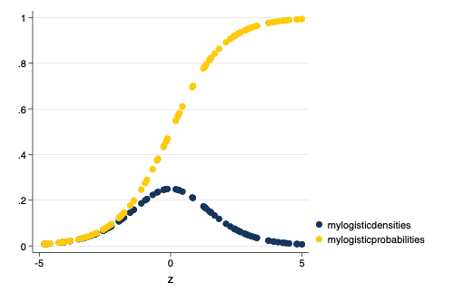

2 Jun 2020

Linear models, probit and logit
y x1 x2 ... \(\leftarrow\) \(\rightarrow\) \(F(y) = \beta_0 + \beta x_1 + \beta x_2 ...\)
regress y x1 x2 OLS; Linear Model
logit y x1 x2 Logistic Regression
probit y x1 x2 Probit Regression
glm ...
. use "/Users/agrogan/Box Sync/DATA WAREHOUSE/General Social Survey Panel Data/GSS_panel > 2010w123_R6 - stata.dta", clear ( )
. codebook polviews_3 // what does this variable look like?
────────────────────────────────────────────────────────────────────────────────────────
polviews_3 polviews_3: THINK OF SELF AS LIBERAL OR CONSERVATIVE
────────────────────────────────────────────────────────────────────────────────────────
type: numeric (byte)
label: V2213_A
range: [1,7] units: 1
unique values: 7 missing .: 0/2,044
unique mv codes: 3 missing .*: 770/2,044
tabulation: Freq. Numeric Label
46 1 EXTREMELY LIBERAL
180 2 liberal
165 3 SLIGHTLY LIBERAL
469 4 moderate
161 5 SLGHTLY CONSERVATIVE
207 6 conservative
46 7 EXTRMLY CONSERVATIVE
29 .d DK
740 .i IAP
1 .n NA
. recode happy_3 (1/2 = 1)(3=0), generate(happy_3_D) // dichotomize (911 differences between happy_3 and happy_3_D)
. tabulate happy_3 happy_3_D // double check
│ RECODE of happy_3
happy_3: │ (happy_3: GENERAL
GENERAL │ HAPPINESS)
HAPPINESS │ 0 1 │ Total
──────────────┼──────────────────────┼──────────
VERY HAPPY │ 0 391 │ 391
PRETTY HAPPY │ 0 758 │ 758
NOT TOO HAPPY │ 153 0 │ 153
──────────────┼──────────────────────┼──────────
Total │ 153 1,149 │ 1,302
. recode polviews_3 (1/3 = 1)(4/7 = 0), generate(liberal_3_D) // dichotomize (1228 differences between polviews_3 and liberal_3_D)
. generate coninc_3_10K = coninc_3 / 10000 // income in $10K chunks (820 missing values generated)
. label variable coninc_3_10K "Income 10K Chunks"
. egen income_group_3 = cut(coninc_3), group(3) // divide income into three groups (820 missing values generated)
. keep polviews_3 liberal_3_D /// > race_3 /// > happy_3 happy_3_D /// > coninc_3 coninc_3_10K income_group_3 // keep only some variables
. save GSSsmall.dta, replace file GSSsmall.dta saved
. twoway (scatter liberal_3_D coninc_3, jitter(5) legend(off)) ///
> (lowess liberal_3_D coninc_3), scheme(burd) ///
> title("Liberal Attitudes by Income")
. graph export liberal-income.png, width(500) replace (file liberal-income.png written in PNG format)
. regress liberal_3_D i.race_3 i.income_group_3
Source │ SS df MS Number of obs = 1,196
─────────────┼────────────────────────────────── F(4, 1191) = 1.92
Model │ 1.64862069 4 .412155173 Prob > F = 0.1040
Residual │ 255.022784 1,191 .214124924 R-squared = 0.0064
─────────────┼────────────────────────────────── Adj R-squared = 0.0031
Total │ 256.671405 1,195 .214787786 Root MSE = .46274
───────────────┬────────────────────────────────────────────────────────────────
liberal_3_D │ Coef. Std. Err. t P>|t| [95% Conf. Interval]
───────────────┼────────────────────────────────────────────────────────────────
race_3 │
black │ .0456219 .0380945 1.20 0.231 -.0291179 .1203618
other │ .0361862 .0556281 0.65 0.515 -.0729538 .1453261
│
income_group_3 │
1 │ -.0746485 .0356057 -2.10 0.036 -.1445053 -.0047916
2 │ -.0004934 .0323417 -0.02 0.988 -.0639466 .0629597
│
_cons │ .3231964 .0264268 12.23 0.000 .2713481 .3750446
───────────────┴────────────────────────────────────────────────────────────────
. clear all
. set obs 100 // 100 observations number of observations (_N) was 0, now 100
. generate z = runiform(-5, 5) // randomly distributed z scores
. generate mynormaldensities = normalden(z) // normal densities
. generate myprobabilities = normal(z) // cumulative normal probabilities
. twoway scatter mynormaldensities myprobabilities z, scheme(michigan)
. graph export normal.png, width(500) replace (file normal.png written in PNG format)
. use GSSsmall.dta, clear ( )
. probit liberal_3_D i.race_3 i.income_group_3
Iteration 0: log likelihood = -742.22687
Iteration 1: log likelihood = -738.31437
Iteration 2: log likelihood = -738.31277
Iteration 3: log likelihood = -738.31277
Probit regression Number of obs = 1,196
LR chi2(4) = 7.83
Prob > chi2 = 0.0981
Log likelihood = -738.31277 Pseudo R2 = 0.0053
───────────────┬────────────────────────────────────────────────────────────────
liberal_3_D │ Coef. Std. Err. z P>|z| [95% Conf. Interval]
───────────────┼────────────────────────────────────────────────────────────────
race_3 │
black │ .1282501 .1066513 1.20 0.229 -.0807826 .3372829
other │ .1031113 .1562649 0.66 0.509 -.2031624 .4093849
│
income_group_3 │
1 │ -.2173144 .1020685 -2.13 0.033 -.417365 -.0172637
2 │ -.000834 .0907004 -0.01 0.993 -.1786036 .1769355
│
_cons │ -.4599612 .0742229 -6.20 0.000 -.6054354 -.3144871
───────────────┴────────────────────────────────────────────────────────────────
. clear all
. set obs 100 // 100 observations number of observations (_N) was 0, now 100
. generate z = runiform(-5, 5) // randomly distributed z scores
. generate mylogisticdensities = logisticden(z) // logistic densities
. generate mylogisticprobabilities = logistic(z) // cumulative logistic probabilities
. twoway scatter mylogisticdensities mylogisticprobabilities z, scheme(michigan)
. graph export logistic.png, width(500) replace (file logistic.png written in PNG format)
. use GSSsmall.dta, clear ( )
. logit liberal_3_D i.race_3 i.income_group_3
Iteration 0: log likelihood = -742.22687
Iteration 1: log likelihood = -738.33316
Iteration 2: log likelihood = -738.32486
Iteration 3: log likelihood = -738.32486
Logistic regression Number of obs = 1,196
LR chi2(4) = 7.80
Prob > chi2 = 0.0990
Log likelihood = -738.32486 Pseudo R2 = 0.0053
───────────────┬────────────────────────────────────────────────────────────────
liberal_3_D │ Coef. Std. Err. z P>|z| [95% Conf. Interval]
───────────────┼────────────────────────────────────────────────────────────────
race_3 │
black │ .2094235 .1745234 1.20 0.230 -.1326361 .5514831
other │ .1683692 .2563377 0.66 0.511 -.3340434 .6707818
│
income_group_3 │
1 │ -.3598681 .1698329 -2.12 0.034 -.6927344 -.0270018
2 │ -.0010393 .1485725 -0.01 0.994 -.292236 .2901574
│
_cons │ -.7414533 .1218581 -6.08 0.000 -.9802907 -.5026159
───────────────┴────────────────────────────────────────────────────────────────
NB: Negative vs. positive \(\beta\).
. quietly probit liberal_3_D i.race_3 i.income_group_3
. est store myprobit
. quietly logit liberal_3_D i.race_3 i.income_group_3
. est store mylogit
. est table myprobit mylogit
─────────────┬──────────────────────────
Variable │ myprobit mylogit
─────────────┼──────────────────────────
race_3 │
black │ .12825014 .2094235
other │ .10311128 .16836918
│
income_gro~3 │
1 │ -.21731439 -.35986813
2 │ -.00083403 -.00103932
│
_cons │ -.45996125 -.74145328
─────────────┴──────────────────────────
Derivation of logistic model from linear probability model. Using instructor notes
\[ \ln \left( \frac{P(y)}{1-P(y)} \right) = \beta_0 + \beta_1 x_1 + \beta_2 x_2 + ... \]
\[ 0 < OR < 1 \]
indicates that an increase in x is associated with a decrease in y.
\[ 1 < OR < \infty \]
indicates that an increase in x is associated with an increase in y.
. logit liberal_3_D i.race_3 i.income_group_3, or
Iteration 0: log likelihood = -742.22687
Iteration 1: log likelihood = -738.33316
Iteration 2: log likelihood = -738.32486
Iteration 3: log likelihood = -738.32486
Logistic regression Number of obs = 1,196
LR chi2(4) = 7.80
Prob > chi2 = 0.0990
Log likelihood = -738.32486 Pseudo R2 = 0.0053
───────────────┬────────────────────────────────────────────────────────────────
liberal_3_D │ Odds Ratio Std. Err. z P>|z| [95% Conf. Interval]
───────────────┼────────────────────────────────────────────────────────────────
race_3 │
black │ 1.232967 .2151816 1.20 0.230 .8757837 1.735826
other │ 1.183373 .3033432 0.66 0.511 .7160227 1.955766
│
income_group_3 │
1 │ .6977683 .118504 -2.12 0.034 .5002064 .9733595
2 │ .9989612 .1484181 -0.01 0.994 .7465923 1.336638
│
_cons │ .476421 .0580557 -6.08 0.000 .375202 .6049461
───────────────┴────────────────────────────────────────────────────────────────
Note: _cons estimates baseline odds.
See handout
Discussion
See interactive demo, or example script.
https://agrogan1.github.io/newstuff/categorical/logistic-interactions-2/logistic-interactions-2.html